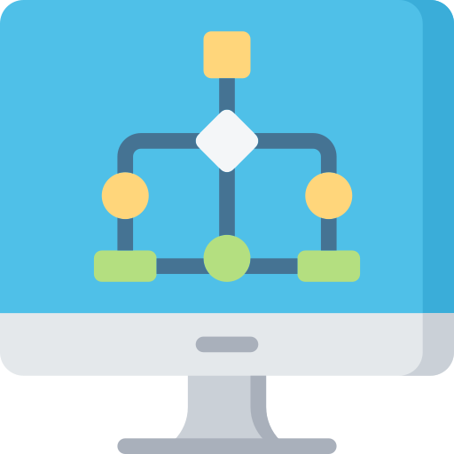

User Interaction
User uploads medical details via Web UI.
(Future) Uploads mammogram images for detection.
➡

Web Application (UI)
UI allows users to input and submit data.
➡

Flask API (Backend)
Receives and preprocesses user data.
Prepares structured data for ML Model.
➡

Machine Learning Model
Logistic Regression predicts benign or malignant.
Trained on Kaggle’s Breast Cancer dataset.
➡

Data Handling
Pandas cleans data, NumPy ensures numerical format.
➡

Results & Reports
Displays results using Bootstrap alerts.
(Future) Generates detailed patient reports.